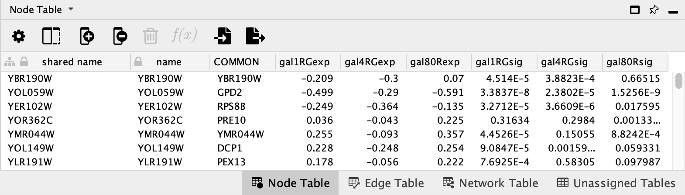
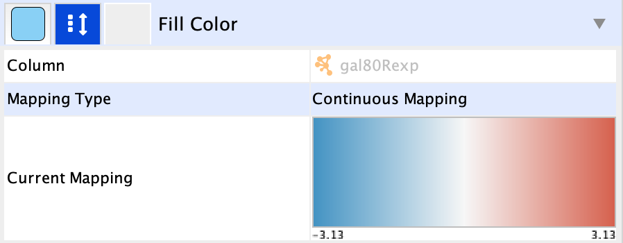
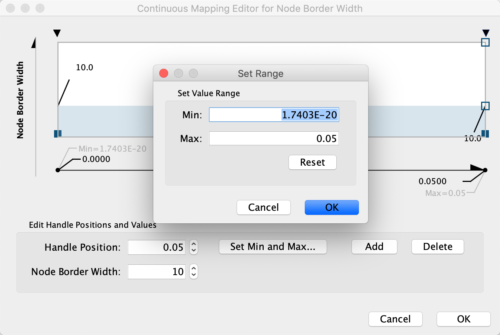
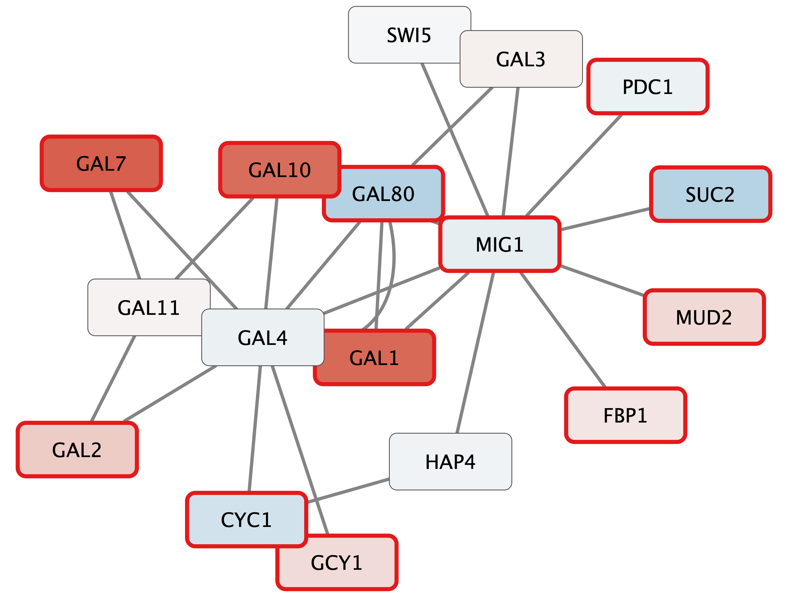

Basic Data Visualization
This tutorial presents a scenario of how expression and network data can be combined to tell a biological story and includes these concepts:
- Visualizing networks using expression data.
- Filtering networks based on expression data.
- Assessing expression data in the context of a biological network.

Loading Network
- To get started, install and launch the latest version of Cytoscape.
- We will use NDEx to find a relevant network. In the Network Search interface in the Control Panel, select NDeX from the drop-down, and type in "GAL1 GAL4 GAL80".
- In the search results, find the galFiltered network. Click the
Import network to Cytoscape icon to the left of the network name. - The network will open with the default style, similar to the network on the right:
To learn more about importing networks from local files, see the Loading Networks Tutorial.
Visualizing Expression Data on Networks
Probably the most common use of expression data in Cytoscape is to set the visual properties of the nodes (color, shape, border) in a network according to expression data. This creates a powerful visualization, portraying functional relation and experimental response at the same time. Here, we will show an example of doing this.
The data used in this example is from yeast, and represents an experiment of perturbations of the genes Gal1, Gal4, and Gal80, which are all yeast transcription factors.
For this tutorial, the experimental data was part of the Cytoscape session file you loaded earlier, and is visible in the Node Table:
-

- You can select nodes in the network by
Shift + Click and Drag or byShift + clicking on multiple nodes . - Selecting one or more nodes in the network will update the Node Table to show only the corresponding row(s).
To learn more about importing data, see the Importing Data From Tables.
We can now use the data to manipulate the visual properties of the network by mapping specific data columns to visual style properties:
- The gal80Rexp expression values will be mapped to node color; nodes with low expression will be colored blue, nodes with high expression will be colored red.
- Significance for expression values will be mapped to Node Border Width, so nodes with significant changes will appear with a thicker border.
Set Node Fill Color
- Click on the
Style tab in theControl Panel . - Find
Fill Color in the list of properties and expand it to view the mapping options. - Click the
-- select value -- cell in theColumn section, and select gal80Rexp in the drop-down. - Click the
-- select value-- cell in theMapping Type section, and selectContinuous Mapping in the drop-down. - This produces an initial gradient ranging from blue to red for expression values. Notice that the nodes in the network change color. For our purposes, this default gradient works so we don't need to edit it.

To learn more about changing node color, see the Visualizing Expression Data Tutorial.
Set Default Node Color
Some nodes in the network don't have any data, and for those nodes, the default color applies. In our case, the default color is blue, which falls within the spectrum of our blue-red gradient. This is not ideal for data visualization, so a useful trick is to choose a color outside the gradient spectrum to distinguish nodes with no defined expression value.
- Still in the
Style tab, underFill Color , click theDef. (leftmost) square next toFill Color and choose a dark gray color.
Set Node Border Width
- Click on the middle square (
Map. ) next to theBorder Width row in theStyle panel. - Click the
-- select value -- cell in theColumn section, and select gal80Rsig in the drop-down. - Click the
-- select value-- cell in theMapping Type section, and selectContinuous Mapping in the drop-down. - Double-click on the gradient, which defines the node border width over the range of p values.

- First, we will define the min/max of the range of p values we are interested in, that is anything under 0.05. Click on
Set Min and Max... and set the max to 0.05. ClickOK to save. - Click on the handle for the max value (black triangle on the right-most end of the gradient) and set the value to 10 in the
Node Border Width field.
To learn more about visualizing data, see the Visualizing Expression Data Tutorial.
Creating a Legend
The Cytoscape app Legend Creator allows you to create a customized legend for your visualization. You can install Legend Creator from the App Store or via the
- In the
Control Panel , go to theLegend Panel . This is the interface for the Legend Creator app, and will list multiple options for creating a legend. - For our purposes, the default settings are satisfactory. Click
Add Legend to continue. The legend will appear in the lower left of the network view.
- To move the legend, first click the
Toggle Annotation Selection icon at the bottom of theNetwork View Window . You can now select the legend like you would any object, for example by click and drag.
To learn more about creating legends, see the Legend Creator.
Layouts
An important aspect of network visualization is the layout, meaning the positioning of nodes and edges. Our network had a preset layout in the original file you imported, but this can be changed.
- Let's change the layout to Degree Sorted Circle Layout by selecting
Layout → Degree Sorted Circle Layout . In this layout, nodes are sorted by degree (connectedness), with the highest degree node at the 6 o'clock position, and remaining nodes are sorted counter clock-wise based on decreasing degree.
For this network, a degree-sorted circle layout may not be the most effective. Instead, let's try a force-directed layout instead, which may work better with this network.
- An easy way to apply the Prefuse Force-directed Layout is by clicking the
Preferred Layout in the toolbar. The preferred layout algorithm can be changed underLayout → Settings... .
Cytoscape supports many different layout algorithms, described in detail in the Cytoscape manual.
Select Nodes
Cytoscape allows you to easily filter and select nodes and edges based on data attributes. Next, we will select a subset of nodes with high expression in the gal80 knockout:
- Go to the
Select tab in the Cytoscape Control Panel (the leftmost panel). - Click on the
+ button and selectColumn Filter . - Under
Choose column... , selectNode: gal80Rexp . Notice how all the nodes in the network are selected at first. - Using the slider or the input fields, specify values of 2 or higher by changing the minimum value to 2.
You should now see only a few nodes in the network selected (highlighted yellow).
To learn more about filtering and selection, see the Filtering by Selection Tutorial.
Expand Selection and Create New Network
We have now selected only the few top expressing nodes. To see the context of these nodes in the larger network, we can expand the selection of nodes to include the nodes connecting to the selected nodes, i.e. the first neighbors. Once we have that larger selection, we can create a new network.
- Select the first neighbors of selected nodes by clicking the
First Neighbors of Selected Nodes → Undirected button in the toolbar.
in the toolbar. - Create a new network from the current selection by clicking the
New Network From Selection, All edges button in the toolbar. - Click on the
Preferred Layout button in the toolbar to apply a force-directed layout.
Your new network will look similar to this:
Exploring Nodes
- Right-click on any node (for example GAL4).
- Select the menu
External Links → Sequences and Proteins → Ensembl Gene View → yeast . - This will launch a browser window and search the Ensembl database for the term YPL248C, the name of the node.
Digging into the biology of this network, it turns out that GAL4 is repressed by GAL80. Both nodes (GAL4 and GAL11) show fairly small changes in expression, and neither change is statistically significant: they are pale blue with thin borders. These slight changes in expression suggest that the critical change affecting the red nodes might be somewhere else in the network, and not either of these nodes. GAL4 interacts with GAL80, which shows a significant level of repression: it is medium blue with a thicker border.
Note that while GAL80 shows evidence of significant repression, most nodes interacting with GAL4 show significant levels of induction: they are rendered as red rectangles. GAL11 is a general transcription co-factor with many interactions.
Putting all of this together, we see that the transcriptional activation activity of Gal4 is repressed by Gal80. So, repression of Gal80 increases the transcriptional activation activity of Gal4. Even though the expression of Gal4 itself did not change much, the Gal4 transcripts were much more likely to be active transcription factors when Gal80 was repressed. This explains why there is so much up-regulation in the vicinity of Gal4.
Summary
In summary, we have:
- Explored a yeast interactome from a transcription factor knockout experiment
- Created a visual style using expression value as node color and with border width mapped to significance
- Selected high expressing genes and their neighbors and created a new network
Finally, we can now export this network as a publication-quality image....
Saving Results
Cytoscape provides a number of ways to save results and visualizations:
- As a session:
File → Save ,File → Save As... - As an image:
File → Export → Network to Image... - To the web:
File → Export → Network to Web Page... (Example) - To a public repository:
File → Export → Network to NDEx , orFile → Export → Collection to NDEx - As a graph format file:
File → Export → Network to File .
Formats:- CX JSON
- Cytoscape.js JSON
- GraphML
- PSI-MI
- XGMML
- SIF